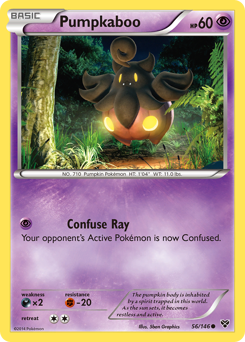
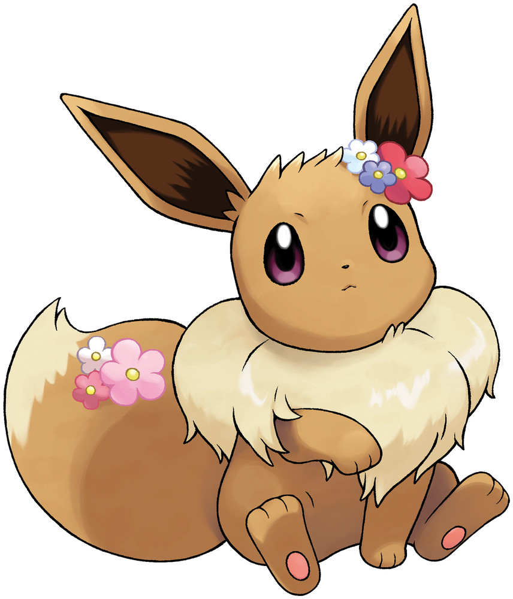

{% extends "base.html" %} {% block title %} Home {% endblock %} {% block content
%}

<div class="d-flex">
	<div class="container w-75">
		<!--  GRAILED START  -->
		<section id="home-grailed-list" class="container mb-5">
			<!--  Carousel Wrapper  -->
			<div
				id="carousel"
				class="carousel slide carousel-fade text-center my-5"
				data-bs-ride="carousel"
			>
				<h2 class="text-white pt-4">Grailed 👑</h2>
				<!--  Inner -->
				<div class="carousel-inner d-flex px-5 pb-5 pt-0">
					{% for i in range(0,3) %}
					<div
						class="
							card
							bg-dark
							border-dark
							text-center
							w-25
							h-25
							mx-3
							my-5
						"
					>
						
						<div class="card-body">
							<p class="card-text">Mimikyu</p>
						</div>
					</div>
					{% endfor %}
					<div
						class="card border-dark text-center w-25 h-25 mx-3 my-5"
					>
						
						<div class="card-body">
							<h5 class="card-title mb-4">Add New Grail</h5>
							<button
								type="button"
								class="btn btn-primary"
								data-bs-toggle="modal"
								data-bs-target="#add-grail-modal"
							>
								ADD
							</button>
						</div>
					</div>
				</div>

				<!--  CONTROLS STARTS  -->
				<button
					class="carousel-control-prev"
					type="button"
					data-bs-target="#carousel"
					data-bs-slide="prev"
				>
					<span
						class="carousel-control-prev-icon"
						aria-hidden="true"
					></span>
					<span class="visually-hidden">Previous</span>
				</button>
				<button
					class="carousel-control-next"
					type="button"
					data-bs-target="#carousel"
					data-bs-slide="next"
				>
					<span
						class="carousel-control-next-icon"
						aria-hidden="true"
					></span>
					<span class="visually-hidden">Next</span>
				</button>
				<!--  CONTROLS END  -->
			</div>
		</section>
		<!--  GRAILED END  -->

		<!--  SET COMPLETION START  -->
		<section
			id="home-master-set-list"
			class="container mb-5 text-center overflow-auto vh-100"
		>
			<h2 class="text-white py-4">Sets 📜</h2>
			<input
				type="search"
				id="home-set-search"
				class="form-control w-75 mx-auto"
				placeholder="Search for sets..."
				aria-label="Search"
			/>
			<div class="container d-flex flex-wrap justify-content-center">
				{% for i in range(0, 18)%}

				<div
					class="
						card
						text-center
						w-25
						mx-5
						my-5
						home-set-card
						border-info
						set-link
					"
				>
					<div class="card-header">Fusion Strike</div>
					
					<div class="card-footer">000 / 264</div>
				</div>
				{% endfor %}
			</div>
		</section>
		<!--  SET COMPLETION END  -->
	</div>

	<!--  TWITTER FEED START  -->
	<div class="container w-25 mt-5">
		<section id="twitter-feed-wrapper" class="px-5 py-4 text-center">
			<h2 class="text-white pb-1">News 📰</h2>
			<a
				class="twitter-timeline"
				data-theme="dark"
				data-height="97%"
				href="https://twitter.com/pokebeach?ref_src=twsrc%5Etfw"
				>Tweets by pokebeach</a
			>
			<script
				async
				src="https://platform.twitter.com/widgets.js"
				charset="utf-8"
			></script>
		</section>
	</div>
	<!--  TWITTER FEED END  -->

	<!-- GRAIL MODAL START -->
	<div
		class="modal fade"
		id="add-grail-modal"
		data-bs-backdrop="static"
		data-bs-keyboard="false"
		tabindex="-1"
		aria-labelledby="add-grail-modal"
		aria-hidden="true"
	>
		<div class="modal-dialog">
			<div class="modal-content">
				<div class="modal-header">
					<h5 class="modal-title" id="add-grail-modal-title">
						Modal title
					</h5>
					<button
						type="button"
						class="btn-close"
						data-bs-dismiss="modal"
						aria-label="Close"
					></button>
				</div>
				<div class="modal-body">...</div>
				<div class="modal-footer">
					<button
						type="button"
						class="btn btn-secondary"
						data-bs-dismiss="modal"
					>
						Close
					</button>
					<button type="button" class="btn btn-primary">
						Understood
					</button>
				</div>
			</div>
		</div>
	</div>
	<!-- GRAIL MODAL END -->
</div>

{% endblock %}
